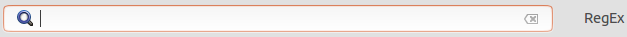

Для поиска объектов в таблице изменений удобно воспользоваться полем поиска над списком изменений.
Поиск происходит по именам объектов. При установленном флажке RegEx поиск осуществляется с использованием регулярных выражений.
Для начала просто введите часть имени в поле поиска. В таблице изменений отобразятся объекты, соответствующие данному условию.